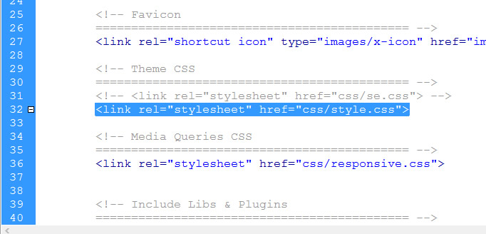
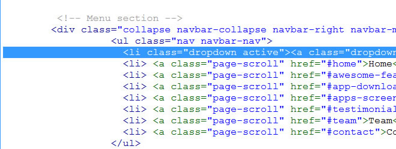
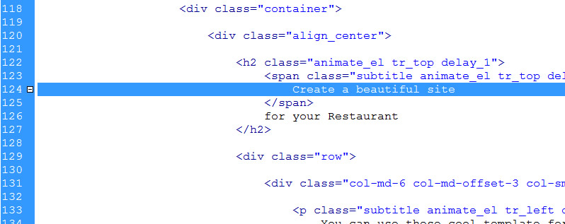
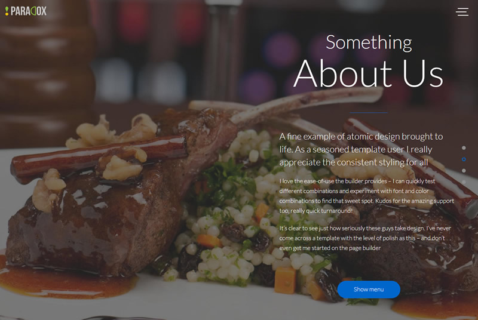
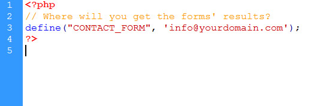

Documentation
About the Lander one-page Restaurant Template
This HTML5 Template is made with Bootstrap v 3.3.6 and it's very easy to modify it as you wish. Just follow the instructions below!
Included files
The main.zip file you have just downloaded contains the following folders:
- 1. _documentation
- 2. restaurant (it contains all the necessary files for your site)
Customizing the Template
LANDER ONE-PAGE PORTFOLIO TEMPLATE
Inside the Restaurant folder, you'll find the following folders:
- contact_form (the php file for your form)
- css (all the needed css files of the template)
- fonts ( the fonts used inside the template)
- images ( it contains all the pictures placeholders of the template.
- js (all the javascript files)
- plugins (all the plugins used inside the template)
- index.html
- mail.php
- How do i replace the site logo with my own?
Locate the images folder and replace the logo.png (120 x 28 px) with your own, then upload it to your server. (see the picture below).

- How do i change the site color with my own?
We already set up for you 4 colors: blu, brown, green and red. Inside the css folder, find the color that you want to use and replace the link inside the index.html page as shown below. I.e. if you want to use the style-green.css, replace the link accordingly on line 32

- How do i set my social media addresses?
Open the index.html file, go to the line 413and put the link to your social media pages inside there (see the picture below).

- How do i modify the menù?
Open the index.html and find the line 91 as shown in the picture below. Modify the menu and the links as you wish.

- How do i change the first background picture?
Find the images folder, open it and replace the slide1.jpg image (1920x1200),.
If you want to change the text above the sliders as well, open the index.html, start from line 124 and go down in order to replace the text with your own.

- How do i change the About section infos?
Open the index.html page, starting from line 175, replace the text infos with your own. Then create a jpg image (size 1500x1200px) name it slide2.jpg,
save it inside the images folder. Upload everything to your server

- How do i change the Menu section infos?
Open the index.html page, starting from line 233, replace the text infos with your own. Then create a jpg image (size 1500x1200px) name it slide3.jpg,
save it inside the images folder. Upload everything to your server
- How do i change the Contact section infos?
Open the index.html page, starting from line 401, replace the text infos with your own. Then create a jpg image (size 1500x1200px) name it slide4.jpg,
save it inside the images folder. Upload everything to your server
- How do i change the email form in order to receive requests from my site?
Inside the main folder, find the mail.php page, open it and replace the email address at line 3 with your own..

Further Support
For additional help and/or customization, you may contact us using the form on our profile page.page
Thank you again for your purchase and don't forget to rate us!
Best Regards
Dreamcoder